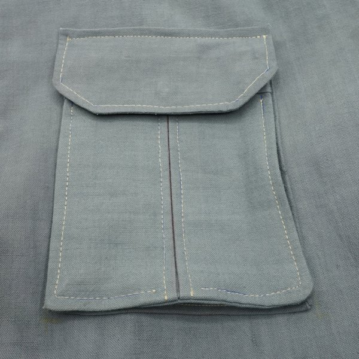
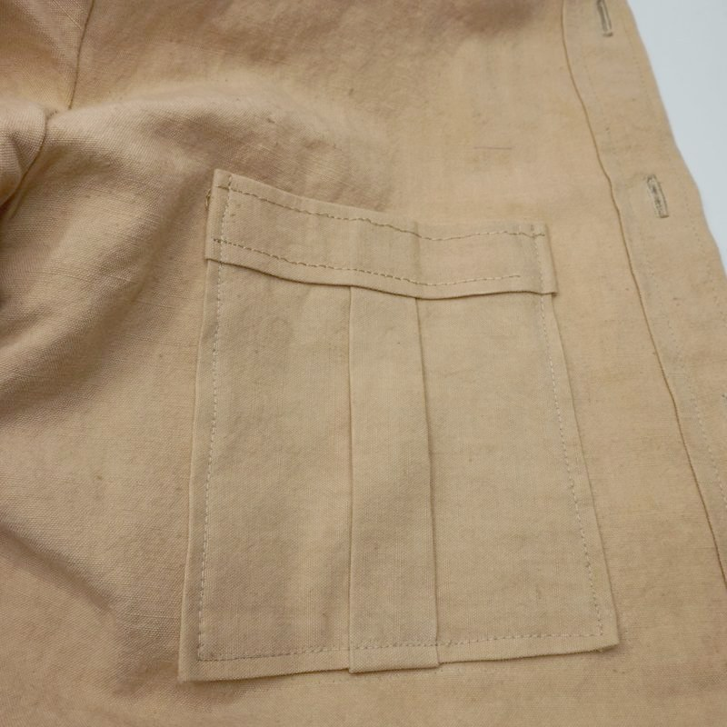
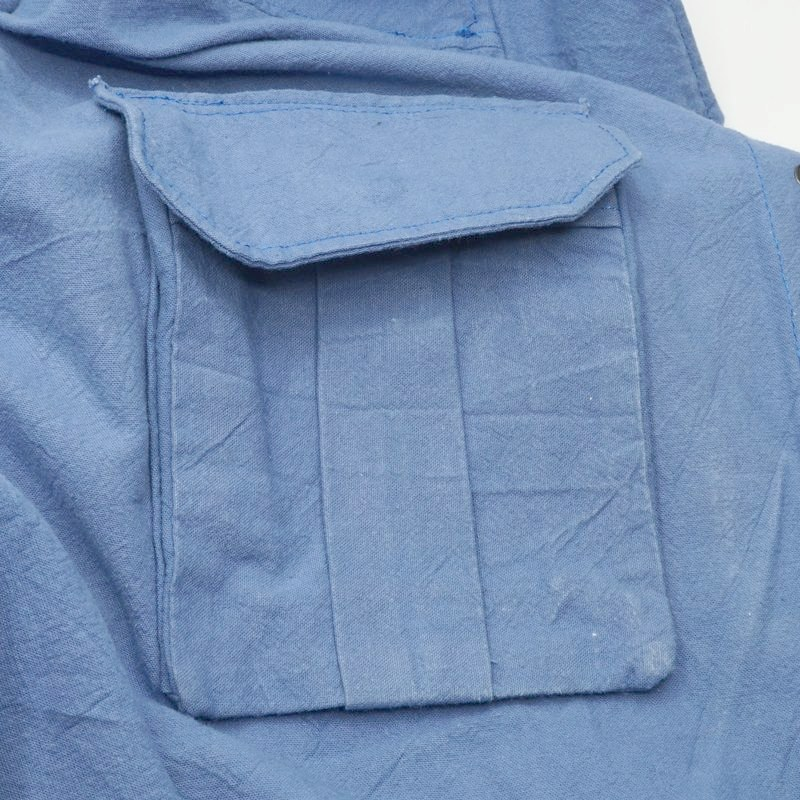
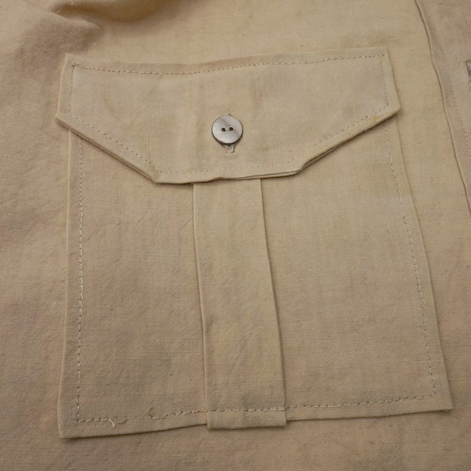
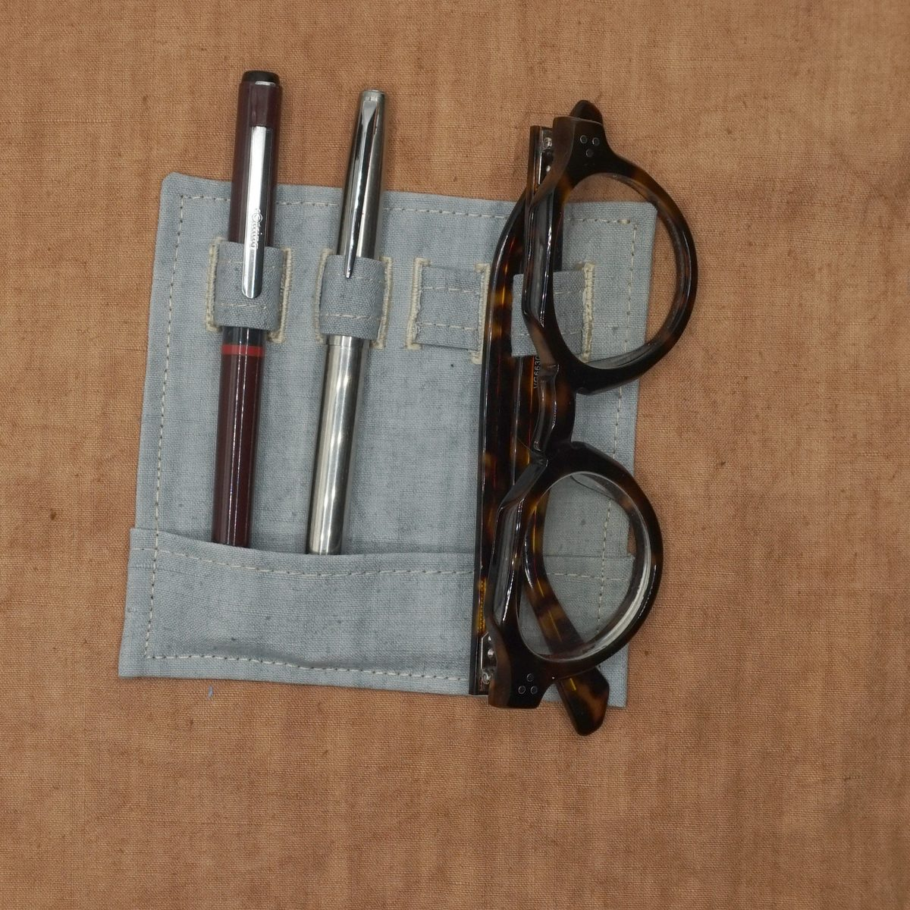
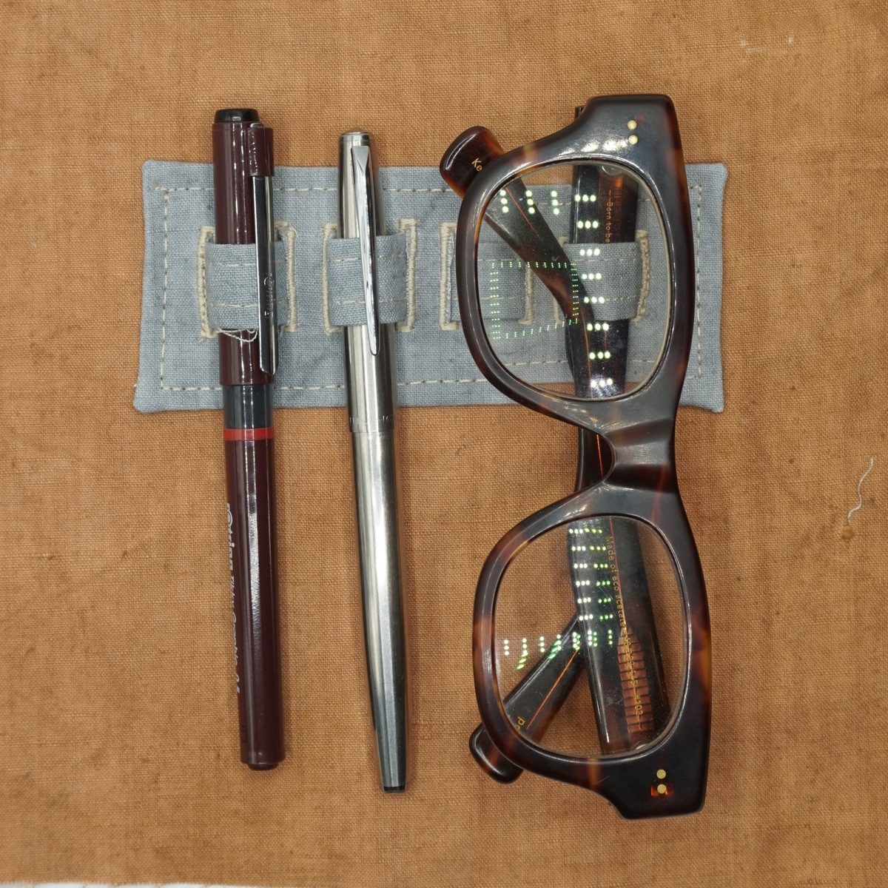
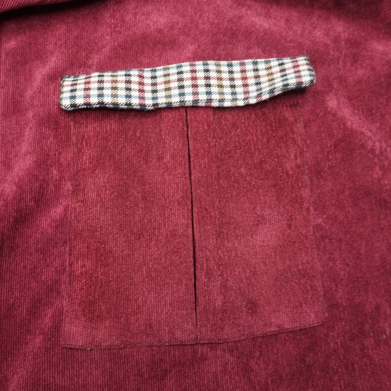
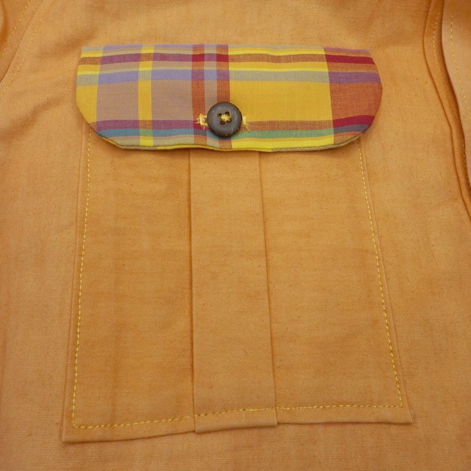
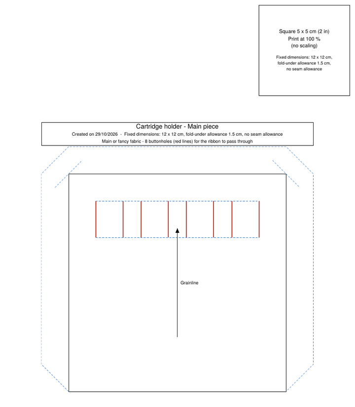

Free patterns
Pockets and other garment details: free patterns as A4 PDFs at 1:1 scale. Enter your dimensions for the pockets, or take the fixed-size cartridge holder pattern.
Choose a family

Patch pockets
Create a pattern

Other pockets
In development
Epaulettes
In development

Sleeve tabs
In development

Cartridge holders
Pen and glasses holders
View the pattern
Makes










How it works
- Choose a pattern family
- Patch pockets: choose the shape, then enter your measurements and the seam allowance. Cartridge holder: the dimensions are fixed.
- Download the PDF and print it at 100 %, checking the 5 cm test square (guide)

A word from the author
I am retired and took up sewing late in life. This site does not, of course, claim to be exhaustive on pocket pattern-making.
It was by using FreeSewing’s free parametric patterns, then drafting with Seamly2D (free parametric pattern-making software), and making safari jackets from my grandmother’s old linen-cotton (métis) sheets, that I got interested in studying the types of patch pockets presented here.
I intend to add patterns for other garment details useful for jackets, coats…
If you have particular requests within the scope of this site, please let me know through the “Your feedback” form (anonymous) or by email: Contact me